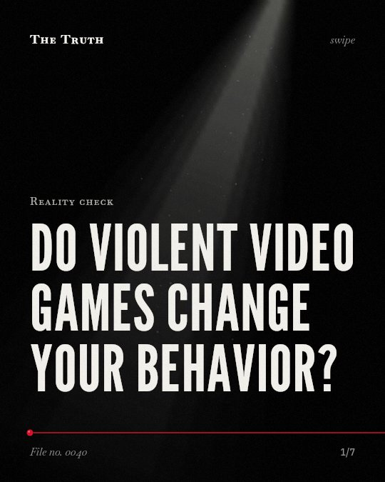

Reality check
Do violent video games change your behavior?

The evidence on violent video games is mixed.
Some studies find negligible effects on aggression, while others find significant positive effects.,,,,,
Established. Several studies combined, or official data. The evidence is mixed.
What the research found
Overall results from 101 studies suggest that video game influences on increased aggression (r = . 06), reduced prosocial behavior (r = . 04), reduced academic performance (r = -. 01), depressive symptoms (r = . 04), and attention deficit symptoms (r = . 03) are minimal.
“Overall, results from 101 studies suggest that video game influences on increased aggression (r = . 06), reduced prosocial behavior (r = . 04), reduced academic performance (r = -. 01), depressive symptoms (r = . 04), and attention deficit symptoms (r = . 03) are minimal.”
Meta-analysis, 2015. Ferguson, Perspectives on Psychological Science.
The current analysis revealed negligible relationships between violent games and aggressive or prosocial behavior, small relationships with aggressive affect and cognitions, and stronger relationships with desensitization.
“The current analysis revealed negligible relationships between violent games and aggressive or prosocial behavior, small relationships with aggressive affect and cognitions, and stronger relationships with desensitization.”
Meta-analysis, 2020. Ferguson et al., Perspectives on Psychological Science.
The effect of violent video games on aggression is positively associated with type of game violence and negatively related to time spent playing the games.
“This effect is positively associated with type of game violence and negatively related to time spent playing the games”
Meta-analysis, 2001. Sherry, Human Communication Research.
A random-effects meta-analysis with 30 effect sizes from 21 studies (N = 15,836) yielded a significant and relevant positive effect of VVG on subsequent physically aggressive behavior (r = . 21).
“A random-effects meta-analysis with 30 effect sizes from 21 studies (N = 15,836) yielded a significant and relevant positive effect of VVG on subsequent physically aggressive behavior (r = . 21).”
Meta-analysis, 2021. Burkhardt & Lenhard, Media Psychology.
The effects of violent video games occur for males and females and for children growing up in Eastern or Western cultures.
“The effects occur for males and females and for children growing up in Eastern or Western cultures.”
Meta-analysis, 2010. Huesmann, Psychological Bulletin.
An updated meta-analysis reveals that exposure to violent video games is significantly linked to increases in aggressive behaviour, aggressive cognition, aggressive affect, and cardiovascular arousal, and to decreases in helping behaviour.
“An updated meta-analysis reveals that exposure to violent video games is significantly linked to increases in aggressive behaviour, aggressive cognition, aggressive affect, and cardiovascular arousal, and to decreases in helping behaviour.”
Meta-analysis, 2003. Anderson, Journal of Adolescence.
Research results vary by methodology.
One meta-analysis shows minimal influence on aggression and academic performance. Another shows significant links to increased aggressive behavior and cardiovascular arousal. The data lacks consensus.
The data is not settled.
Publication bias and researcher-expectancy effects may shape what you see in the news. The truth is more complex than a simple yes or no.
This part is our reading of the evidence, not a finding.
You sit in a dark room.
The blue light of the screen reflects on your face as you move your hands over the controller.
The honest summary
The research shows a lack of consensus, with results ranging from negligible to significant depending on the specific meta-analysis and methodology used.
Many studies are affected by publication bias, researcher-expectancy effects, and issues with standardized outcome measures.
What do you believe about your habits?
Sources
- Christopher John Ferguson (2015). Do Angry Birds Make for Angry Children? A Meta-Analysis of Video Game Influences on Children’s and Adolescents’ Aggression, Mental Health, Prosocial Behavior, and Academic Performance. Perspectives on Psychological Science. Meta-analysis, cited 523 times.
- Johanna Burkhardt, Wolfgang Lenhard (2021). A Meta-Analysis on the Longitudinal, Age-Dependent Effects of Violent Video Games on Aggression. Media Psychology. Meta-analysis, cited 87 times.
- J. Sherry (2001). The effects of violent video games on aggression. A meta-analysis. Human Communication Research. Meta-analysis, cited 446 times.
- Craig A. Anderson (2003). An update on the effects of playing violent video games. Journal of Adolescence. Meta-analysis, cited 739 times.
- Christopher John Ferguson, Allen Copenhaver, Patrick M. Markey (2020). Reexamining the Findings of the American Psychological Association’s 2015 Task Force on Violent Media: A Meta-Analysis. Perspectives on Psychological Science. Meta-analysis, cited 94 times.
- L. Rowell Huesmann (2010). Nailing the coffin shut on doubts that violent video games stimulate aggression: Comment on Anderson et al. (2010).. Psychological Bulletin. Meta-analysis, cited 107 times.
This file was researched and drafted by software, then checked by rules a model cannot talk its way around: each quote above was matched word for word against the paper, and every number had to appear in it. How files are made.